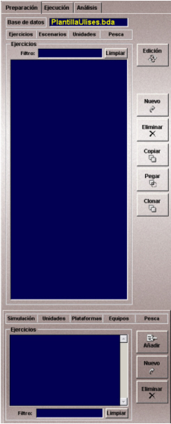
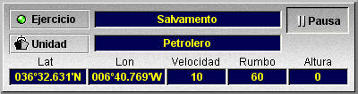

Área de Preparación, Ejecución y Análisis
El Área de Área de Preparación, Ejecución y Análisis de Ejercicios se encuentra a la izquierda de la Pantalla de Presentación Cartográfica.

Esta área presenta tres solapas: Preparación, Ejecución y Análisis. Seleccionando cada una de ellas, el Instructor accede a la funcionalidad específica de Preparación de Ejercicios, Ejecución (Control / Supervisión) de Ejercicios y Análisis de Ejercicios.
Cuando se selecciona el modo Pantalla Completa (ver el apartado Menú Principal), esta área es ocultada y sustituida por un área más pequeña en la que se muestran los siguientes datos:

Si la unidad controlada tiene una plataforma de tipo Buque Simple o Aérea, el instructor puede cambiar la velocidad, rumbo y altura (para unidades aéreas) de la unidad que controla introduciendo los valores deseados en los respectivos campos de esta área de datos y pulsando la tecla "Enter".